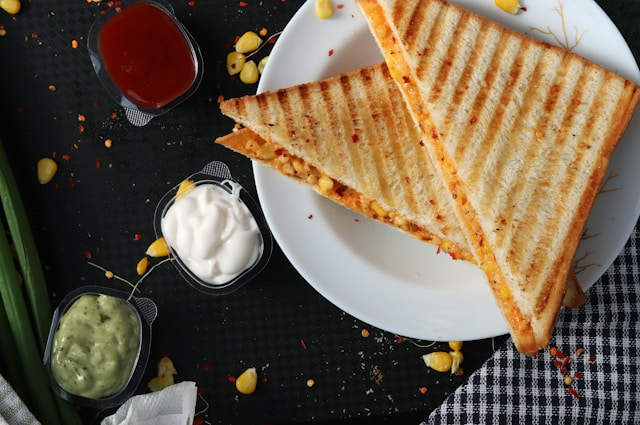

4-ingredient Spinach Artichocke Chicken Texas Toast

Description
This 4-ingredient spinach artichoke chicken Texas toast dinner is incredibly easy to make. Cooked chicken and spinach artichoke dip spread on baked Texas toast take minutes to assemble and less than a half hour to bake.
Ingredients
- 8 slices frozen Texas toast
- 1 1/2 cups prepared spinach artichoke dip
- 1/2 cup shredded mozzarella cheese (optional)
- 2 cups shredded cooked chicken
Steps
- Preheat the oven to 425 degrees F (220 degrees C). Place toast on a parchment paper lined baking sheet.
- Bake in the preheated oven for 12 minutes.
- Flip each piece of toast; use a spoon to press the center of each piece down to form a well inside the crust.
- Divide chicken among toast slices. Warm spinach artichoke dip in the microwave for 1 minute. Stir in mozzarella cheese, and top each toast evenly with dip.
- Bake in the preheated oven until heated through, 8 to 10 minutes. Turn broiler on High and continue to cook until just bubbly around the edges and lightly browned, 1 to 2 minutes.
Home